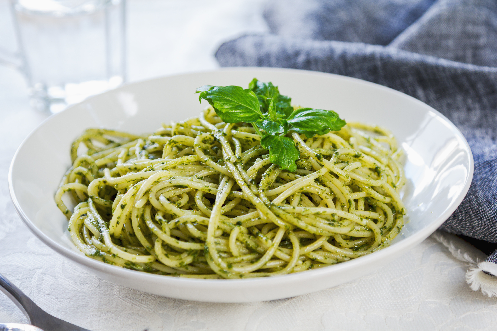

Espaguete ao Pesto

Descrição
Um bolo é sempre bem-vindo durante o café da tarde, ainda mais seguindo uma receita tão fácil assim.
Ingredientes - Molho Pesto
- 2 dentes de alho
- 1 colher (sopa) de queijo provolone ralado
- 1 colher (sopa) de queijo parmesão ralado
- 4 nozes
- 1/2 xícara (chá) de azeite
- 1/4 xícara (chá) de folhas de manjericão
Ingredientes - Macarrão
- 300g de macarrão espaguete
- Água
- Sal a gosto
Modo de Preparo - Molho Pesto (5m):
- Em um recipiente, adicione o alho, os queijos, as nozes, as folhas de manjericão e triture enquanto adiciona aos poucos o azeite
- Reserve
Modo de Preparo - Macarrão (15m):
- Em uma panela, deixe a água ferver e adicione o sal
- Junte o macarrão e cozinhe a massa conforme indicado na embalagem
- Escorra o espaguete e em uma panela junte o macarrão e o molho pesto
- Misture bem e finalize com mais molho e nozes picadas por cima